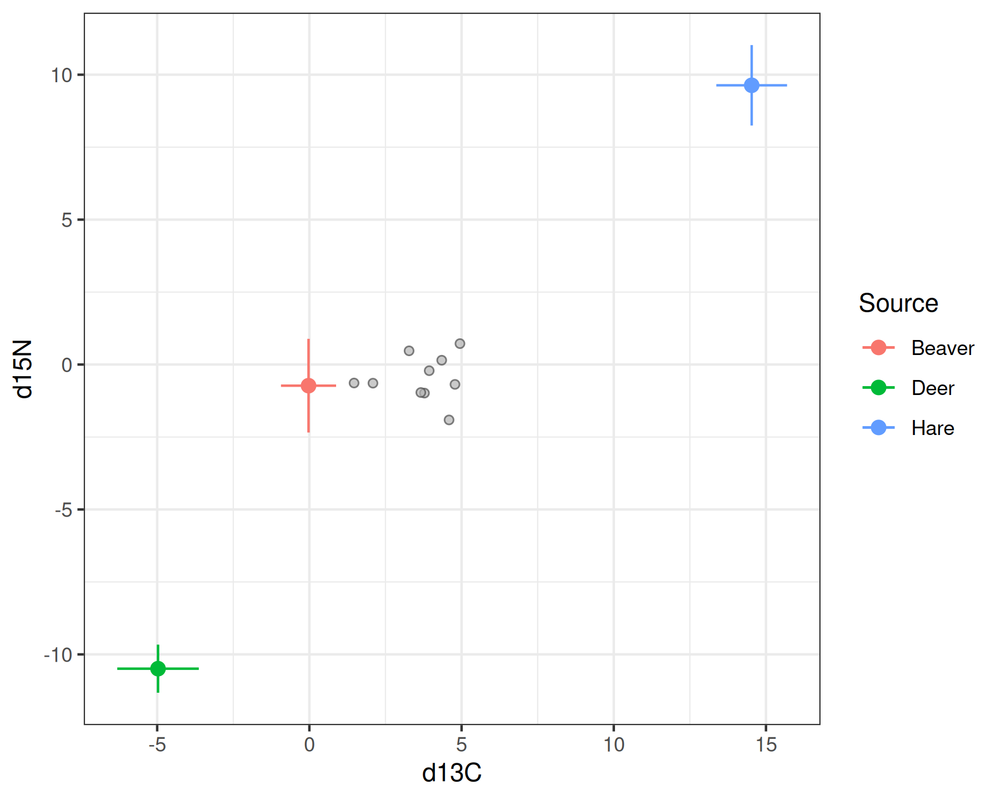
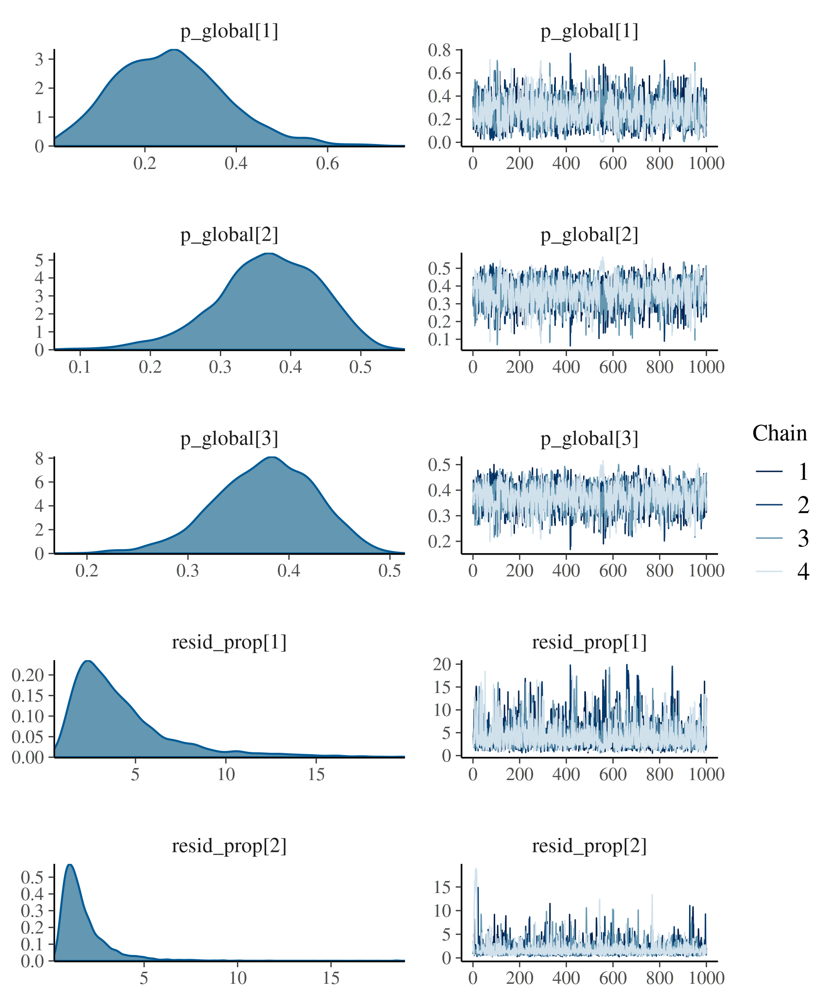
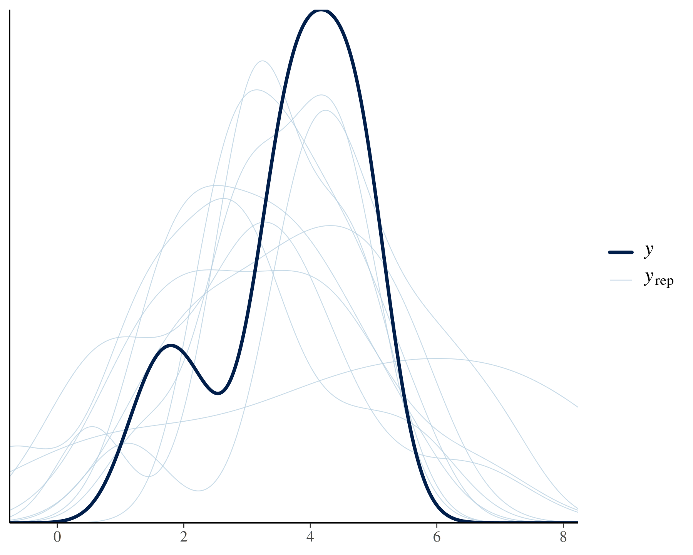
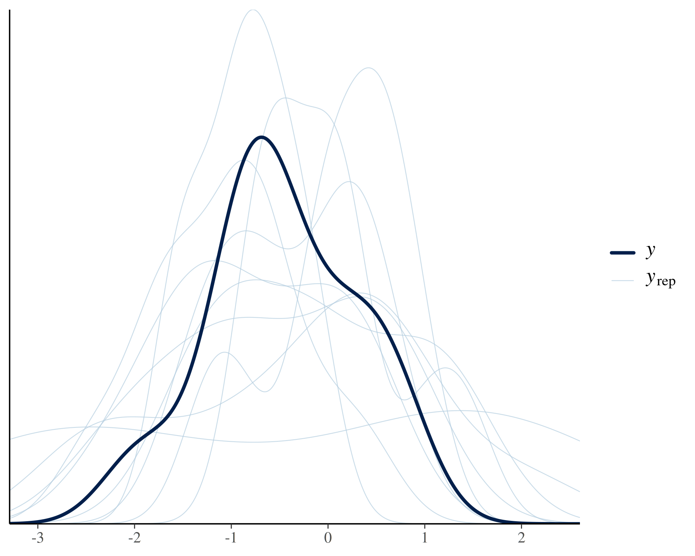
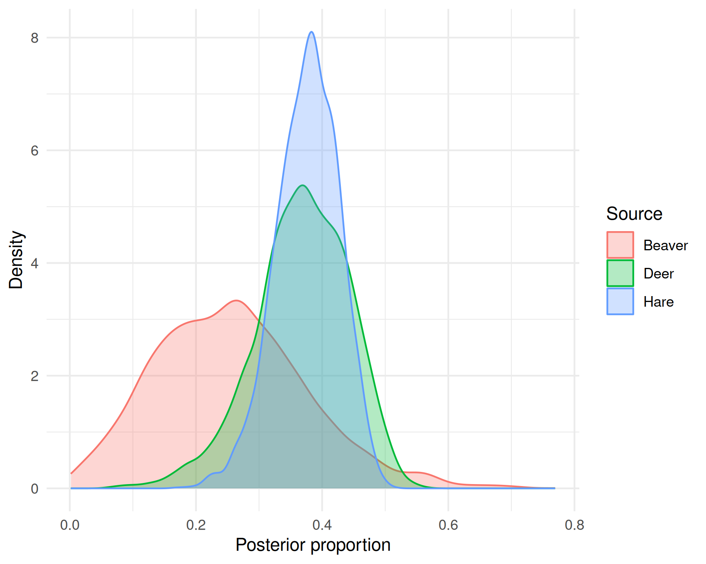

Getting started with bsimms
Mattia Ghilardi
2026-10-02
Source:vignettes/getting-started.Rmd
getting-started.RmdStable isotope mixing models (SIMMs) estimate the proportional contribution of a set of sources to a mixture from differences in stable isotope ratios (e.g. \delta^{13}C, \delta^{15}N) between sources and the mixture – most commonly for reconstructing animal diets from tissue isotope values, though the same problem arises elsewhere too, such as tracing the sources of pollutants or sediments. The classic implementations, SIAR (Parnell et al. 2010) and MixSIR (Moore & Semmens 2008), were later combined into MixSIAR (Stock et al. 2018), which – together with SIAR’s successor simmr (Govan et al. 2023) – remains among the most widely used R packages for fitting Bayesian SIMMs in JAGS today. cosimmr (Govan et al. 2024) extends simmr with covariates, fit with a fast variational Bayes approximation instead of JAGS.
bsimms fits this same class of models in Stan
instead, using full MCMC sampling. It reproduces MixSIAR’s core
modelling options – raw or summarised source and trophic discrimination
factor (TDF) data, concentration dependence, flexible error structures,
and cross-tracer covariance – and extends them by letting source
proportions depend on an arbitrary lme4-style formula of
fixed and random effects, rather than MixSIAR’s fixed menu of
up to two categorical factors plus one continuous covariate (cosimmr
also supports covariates, though via a fixed-effects design matrix
only). Source proportions are modelled in isometric log-ratio (ILR)
coordinates, so an unconstrained linear predictor maps onto the source
simplex the same way it would for any other response, via a numerically
stable softmax transform. It also uses weakly informative, data-scaled
default priors, robust to the skew and outliers common in isotope data,
with a full override system.
Overview
Fitting a mixing model with bsimms always needs the same five ingredients:
-
formula: a one-sidedlme4-style formula of mixture-level covariates on source proportions (~1for no covariates). -
mixture_data: a data frame with one row per mixture sample, a column per isotope, and, optionally, covariate columns used informula. -
source_data: a data frame of isotope values for each candidate source, either raw replicate measurements or a summarised mean/SD per source (source_means_sds = TRUE). -
tdf_data: a data frame of the trophic discrimination factor (TDF, a.k.a. fractionation or enrichment factor) for each source, again raw or summarised (tdf_means_sds,TRUEby default). -
isotope_names: the isotope column names shared bymixture_data,source_data, andtdf_dataabove.
This vignette fits a model with no covariates end to end and works
through the results. See vignette("data-error") for raw
vs. summarised source/TDF data, concentration dependence, and error
structures, vignette("covariates") for
letting source proportions depend on mixture-level covariates, vignette("priors") for
bsimms’s data-scaled default priors and how to override
them, and vignette("diagnostics") for
interpreting Stan’s sampler diagnostics and informational messages.
Worked example
Simulating example data
simulate_bsimms_data() generates data for any
bsimms model configuration from known parameter values,
which is useful for learning the package (and for testing). Here we
simulate data for a 3-source, 2-isotope model with 10 mixture samples,
no covariates, raw replicate source data without concentration
dependence (conc_dep = FALSE, the default), and summarised
(mean/SD) TDF data.
library(bsimms)
sim <- simulate_bsimms_data(
~1,
n_mixture_obs = 10,
source_names = c("Beaver", "Deer", "Hare"),
isotope_names = c("d13C", "d15N"),
seed = 1
)sim bundles everything needed to fit the model
(mixture_data, source_data,
tdf_data, and the settings below), plus
sim$truth, the true parameter values used to generate the
data.
Checking the data in isotope space
Before fitting, plot_isospace() plots the mixtures in
isotope space against the TDF-corrected source means \pm 1 SD, to check that they fall within the
region spanned by the sources.
plot_isospace(
sim$mixture_data,
sim$source_data,
sim$tdf_data,
isotope_names = sim$isotope_names,
source_means_sds = sim$source_means_sds,
tdf_means_sds = sim$tdf_means_sds
)
All the mixtures fall within the region spanned by the sources, so the data are consistent with a mixing model and we can proceed to fit it (Phillips et al. 2014). Mixtures lying well outside would instead suggest a missing source or an incorrect TDF.
Fitting the model
bsimm() builds the Stan program for the requested model,
compiles it, and draws posterior samples via MCMC. By default it uses
whichever of cmdstanr/rstan is installed
(cmdstanr if both are); set backend to choose
explicitly. chains = 4 MCMC chains are run by default; we
set cores = 4 below so all four sample in parallel instead
of one after another.
fit <- bsimm(
sim$formula,
mixture_data = sim$mixture_data,
source_data = sim$source_data,
tdf_data = sim$tdf_data,
isotope_names = sim$isotope_names,
source_means_sds = sim$source_means_sds,
tdf_means_sds = sim$tdf_means_sds,
conc_dep = sim$conc_dep,
error_structure = sim$error_structure,
source_col = sim$source_col,
cores = 4,
seed = 1
)Inspecting the fit
Printing the fit gives a one-screen overview of the model: the formula, source/isotope/mixture counts and names, error structure, source/TDF data mode, and fitting backend.
fit
#> Bayesian stable isotope mixing model (bsimms)
#> formula: ~1
#> sources (K): 3 (Beaver, Deer, Hare)
#> isotopes (J): 2 (d13C, d15N)
#> mixtures (N): 10
#> error structure: process_residual
#> source data: raw
#> tdf data: summary
#> backend: cmdstanrsummary() reports the population-average source
proportions and error term(s), each with a posterior mean, SD, 95%
credible interval, and MCMC convergence diagnostics (rhat,
bulk/tail effective sample size). With the default
error_structure = "process_residual", the error term shown
per isotope is resid_prop, MixSIAR’s multiplicative factor
scaling the source/TDF variance propagated into the mixture – not a raw
residual SD.
summary(fit)
#> Bayesian stable isotope mixing model
#> formula: ~1
#>
#> Population-average source proportions:
#> source mean sd q2.5 q97.5 rhat ess_bulk ess_tail
#> Beaver 0.256 0.120 0.048 0.522 1.003 1485 891
#> Deer 0.368 0.074 0.201 0.495 1.003 1568 1031
#> Hare 0.376 0.050 0.270 0.464 1.002 1685 1202
#>
#> Error term(s):
#> isotope mean sd q2.5 q97.5 rhat ess_bulk ess_tail
#> d13C 4.246 2.914 1.125 12.84 1.002 2513 1807
#> d15N 1.826 1.576 0.477 5.60 1.001 2706 1952Population-average contributions lean towards Deer and Hare over
Beaver, though with fairly wide credible intervals given the small
simulated sample size. rhat close to 1 and large effective
sample sizes indicate the chains mixed well, which we can also check
visually with trace and density plots of the underlying Stan
parameters.
plot(fit)
Posterior predictive checks
Beyond rhat/effective sample size, it is worth checking
that the fitted model actually reproduces the observed mixture data.
pp_check() overlays the observed isotope values (dark line)
against posterior predictive draws (light lines), one isotope at a time,
using bayesplot’s dens_overlay by default;
pass type to use any other bayesplot
ppc_* function instead
(e.g. type = "ecdf_overlay"). With only 10 mixture samples
in this example, the observed density is naturally rougher than it would
be with more data – judge the check by its overall location and spread
against the predictive draws, not by matching every wiggle.
bayesplot::pp_check(fit, resp = "d13C")
#> Using 10 posterior draws for ppc type "dens_overlay" by default.
bayesplot::pp_check(fit, resp = "d15N")
#> Using 10 posterior draws for ppc type "dens_overlay" by default.
Working with posterior source proportions
posterior_proportions() returns the raw posterior draws
of source proportions p as a
[n_draws, n_obs, K] array;
fitted_proportions() wraps it with the same summary
measures as summary(). Since this model has no covariates,
every mixture sample shares the same population-average proportions
(p_global), so both return identical values for every
observation. Both also accept newdata to predict source
proportions for new, unobserved samples – most useful once covariates
are involved (see vignette("covariates")), since
without them every new sample would get the same population-average
proportions shown here.
fitted_proportions(fit)
#> row source mean sd q2.5 q97.5
#> 1 1 Beaver 0.2560181 0.12046289 0.0479403 0.5224815
#> 2 1 Deer 0.3676916 0.07448911 0.2010131 0.4951741
#> 3 1 Hare 0.3762902 0.04986451 0.2696870 0.4641349
#> 4 2 Beaver 0.2560181 0.12046289 0.0479403 0.5224815
#> 5 2 Deer 0.3676916 0.07448911 0.2010131 0.4951741
#> 6 2 Hare 0.3762902 0.04986451 0.2696870 0.4641349
#> 7 3 Beaver 0.2560181 0.12046289 0.0479403 0.5224815
#> 8 3 Deer 0.3676916 0.07448911 0.2010131 0.4951741
#> 9 3 Hare 0.3762902 0.04986451 0.2696870 0.4641349
#> 10 4 Beaver 0.2560181 0.12046289 0.0479403 0.5224815
#> 11 4 Deer 0.3676916 0.07448911 0.2010131 0.4951741
#> 12 4 Hare 0.3762902 0.04986451 0.2696870 0.4641349
#> 13 5 Beaver 0.2560181 0.12046289 0.0479403 0.5224815
#> 14 5 Deer 0.3676916 0.07448911 0.2010131 0.4951741
#> 15 5 Hare 0.3762902 0.04986451 0.2696870 0.4641349
#> 16 6 Beaver 0.2560181 0.12046289 0.0479403 0.5224815
#> 17 6 Deer 0.3676916 0.07448911 0.2010131 0.4951741
#> 18 6 Hare 0.3762902 0.04986451 0.2696870 0.4641349
#> 19 7 Beaver 0.2560181 0.12046289 0.0479403 0.5224815
#> 20 7 Deer 0.3676916 0.07448911 0.2010131 0.4951741
#> 21 7 Hare 0.3762902 0.04986451 0.2696870 0.4641349
#> 22 8 Beaver 0.2560181 0.12046289 0.0479403 0.5224815
#> 23 8 Deer 0.3676916 0.07448911 0.2010131 0.4951741
#> 24 8 Hare 0.3762902 0.04986451 0.2696870 0.4641349
#> 25 9 Beaver 0.2560181 0.12046289 0.0479403 0.5224815
#> 26 9 Deer 0.3676916 0.07448911 0.2010131 0.4951741
#> 27 9 Hare 0.3762902 0.04986451 0.2696870 0.4641349
#> 28 10 Beaver 0.2560181 0.12046289 0.0479403 0.5224815
#> 29 10 Deer 0.3676916 0.07448911 0.2010131 0.4951741
#> 30 10 Hare 0.3762902 0.04986451 0.2696870 0.4641349plot_proportions() visualises these draws. With a single
set of proportions shared by every mixture sample, a density/histogram
plot of population-average source proportions is the clearest view
(type = "interval" instead suits several distinct
observations, e.g. one per covariate level – see vignette("covariates")).
p_arr <- posterior_proportions(fit)
plot_proportions(p_arr[, 1, , drop = FALSE], type = "density")
Other posterior quantities
Besides source proportions,
fitted()/predict() return the model’s
expected/predicted mixture isotope values, useful for checking how well
the model reproduces the observed mixture data. As with source
proportions, every mixture sample shares the same expected isotope
values here, so we only show the first.
fitted()/predict() accept the same
newdata argument as
posterior_proportions()/fitted_proportions()
above, to predict mixture isotope values for new, unobserved
samples.
Bayesian R2
rstantools::bayes_R2() reports a Bayesian R-squared per
isotope, but is not useful with no covariates: every mixture sample
shares the same fitted value, so there is no across-sample variation for
it to explain, and it is always ~0. See vignette("covariates"), where it
becomes informative once covariates are added.
References
Parnell AC, Inger R, Bearhop S, Jackson AL (2010). “Source partitioning using stable isotopes: coping with too much variation.” PLoS ONE, 5(3), e9672. doi:10.1371/journal.pone.0009672
Moore JW, Semmens BX (2008). “Incorporating uncertainty and prior information into stable isotope mixing models.” Ecology Letters, 11(5), 470-480. doi:10.1111/j.1461-0248.2008.01163.x
Phillips DL, Inger R, Bearhop S, Jackson AL, Moore JW, Parnell AC, Semmens BX, Ward EJ (2014). “Best practices for use of stable isotope mixing models in food-web studies.” Canadian Journal of Zoology, 92(10), 823-835. doi:10.1139/cjz-2014-0127
Stock BC, Jackson AL, Ward EJ, Parnell AC, Phillips DL, Semmens BX (2018). “Analyzing mixing systems using a new generation of Bayesian tracer mixing models.” PeerJ, 6, e5096. doi:10.7717/peerj.5096
Govan E, Jackson AL, Inger R, Bearhop S, Parnell AC (2023). “simmr: A package for fitting Stable Isotope Mixing Models in R.” arXiv preprint. doi:10.48550/arXiv.2306.07817
Govan E, Jackson AL, Bearhop S, Inger R, Stock BC, Semmens BX, Ward EJ, Parnell AC (2024). “cosimmr: an R package for fast fitting of Stable Isotope Mixing Models with covariates.” arXiv preprint. doi:10.48550/arXiv.2408.17230